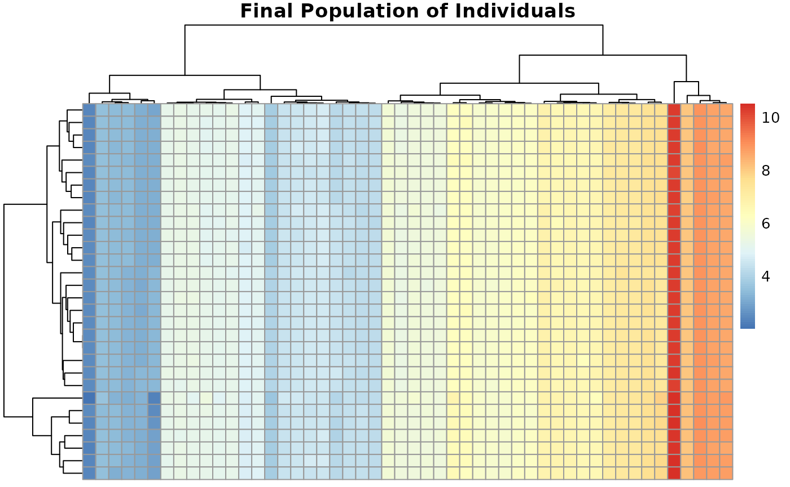

🔬 Introduction
BioGA is an R package implementing a genetic algorithm
(GA) designed for multi-objective optimization on genomic data. It can
be used to:
- select gene signatures
- optimize biomarker panels
- balance objectives like expression distance, sparsity, or custom criteria
This vignette walks through an example using real-world-like gene expression data and demonstrates:
✅ GA initialization
✅ Evolution over generations
✅ Fitness convergence
✅ Visualizations of population diversity
📈 Prepare data
We’ll simulate realistic gene expression data:
set.seed(123)
n_genes <- 50
n_samples <- 20
# Simulate two classes: cases and controls
class_labels <- rep(c("Control", "Case"), each = 10)
genomic_data <- matrix(rnorm(n_genes * n_samples, mean = 5, sd = 2),
nrow = n_genes, ncol = n_samples)
# Introduce differential expression in 10 genes for "Case"
genomic_data[1:10, class_labels == "Case"] <-
genomic_data[1:10, class_labels == "Case"] + 3
rownames(genomic_data) <- paste0("Gene", 1:n_genes)
colnames(genomic_data) <- paste0("Sample", 1:n_samples)
pheatmap(genomic_data,
cluster_rows = TRUE, cluster_cols = TRUE,
main = "Simulated Gene Expression Data")⚙ Run the genetic algorithm
We define parameters and run BioGA:
result <- bioga_main_cpp(
genomic_data = genomic_data,
population_size = 30,
num_generations = 50,
crossover_rate = 0.9,
eta_c = 20.0,
mutation_rate = 0.1,
num_parents = 20,
num_offspring = 20,
num_to_replace = 10,
weights = c(1.0, 0.5),
seed = 42
)
#> Current front size: 1
#> Current front size: 1
#> Current front size: 1
#> Current front size: 1
#> Current front size: 1
#> Current front size: 1
#> Current front size: 1
#> Current front size: 1
#> Current front size: 1
#> Current front size: 1
#> Current front size: 1
#> Current front size: 1
#> Current front size: 1
#> Current front size: 1
#> Current front size: 1
#> Current front size: 1
#> Current front size: 1
#> Current front size: 1
#> Current front size: 1
#> Current front size: 1
#> Current front size: 1
#> Current front size: 1
#> Current front size: 1
#> Current front size: 1
#> Current front size: 1
#> Current front size: 1
#> Current front size: 1
#> Current front size: 1
#> Current front size: 1
#> Current front size: 1
#> Current front size: 1
#> Current front size: 1
#> Current front size: 1
#> Current front size: 1
#> Current front size: 1
#> Current front size: 1
#> Current front size: 1
#> Current front size: 1
#> Current front size: 1
#> Current front size: 1
#> Current front size: 1
#> Current front size: 1
#> Current front size: 1
#> Current front size: 1
#> Current front size: 1
#> Current front size: 1
#> Current front size: 1
#> Current front size: 1
#> Current front size: 1
#> Current front size: 1📊 Visualize convergence of fitness
Let’s compute and plot how the best fitness evolved.
# Since BioGA currently does not return fitness history,
# let’s re-run manually to track convergence:
track_fitness <- function(...) {
pop <- initialize_population_cpp(...)
best_fit <- c()
for (g in 1:50) {
fit <- evaluate_fitness_cpp(genomic_data, pop, weights = c(1.0, 0.5))
best_fit <- c(best_fit, min(fit[, 1])) # Track expression objective
parents <- selection_cpp(pop, fit, 20)
offspring <- crossover_cpp(parents, 20)
mutated <- mutation_cpp(offspring, 0.1, g, 50)
fit_off <- evaluate_fitness_cpp(genomic_data, mutated, c(1.0, 0.5))
pop <- replacement_cpp(pop, mutated, fit, fit_off, 10)
}
best_fit
}
fitness_trace <- track_fitness(genomic_data, 30, 42)
#> Current front size: 1
#> Current front size: 1
#> Current front size: 1
#> Current front size: 1
#> Current front size: 1
#> Current front size: 1
#> Current front size: 1
#> Current front size: 1
#> Current front size: 1
#> Current front size: 1
#> Current front size: 1
#> Current front size: 1
#> Current front size: 1
#> Current front size: 1
#> Current front size: 1
#> Current front size: 1
#> Current front size: 1
#> Current front size: 1
#> Current front size: 1
#> Current front size: 1
#> Current front size: 1
#> Current front size: 1
#> Current front size: 1
#> Current front size: 1
#> Current front size: 1
#> Current front size: 1
#> Current front size: 1
#> Current front size: 1
#> Current front size: 1
#> Current front size: 1
#> Current front size: 1
#> Current front size: 1
#> Current front size: 1
#> Current front size: 1
#> Current front size: 1
#> Current front size: 1
#> Current front size: 1
#> Current front size: 1
#> Current front size: 1
#> Current front size: 1
#> Current front size: 1
#> Current front size: 1
#> Current front size: 1
#> Current front size: 1
#> Current front size: 1
#> Current front size: 1
#> Current front size: 0
#> Warning: No non-dominated individuals found. Using full population for selection.
#> Current front size: 1
#> Current front size: 1
#> Current front size: 1
qplot(1:50, fitness_trace, geom = "line") +
labs(x = "Generation", y = "Best Fitness (Expression Diff.)",
title = "Convergence of Best Fitness Across Generations")🨠Population diversity heatmap
Visualize population at final generation
pheatmap(result$population,
main = "Final Population of Individuals",
cluster_rows = TRUE, cluster_cols = TRUE)
🧬 Compare gene selection frequency
gene_selection_freq <- colMeans(result$population != 0)
barplot(gene_selection_freq, las = 2,
main = "Frequency of Gene Selection in Final Population",
ylab = "Selection Frequency")🌠Network constraint example (optional)
If you had a network, e.g. co-expression network:
network_mat <- matrix(runif(n_genes^2, 0, 1), nrow = n_genes)
diag(network_mat) <- 0
mutated_with_net <- mutation_cpp(result$population,
mutation_rate = 0.1,
iteration = 10,
max_iterations = 50,
network = network_mat)
pheatmap(mutated_with_net,
main = "Population After Mutation with Network Constraint")📌 Summary
In this vignette, we:
- simulated realistic genomic data
- ran
BioGAfor multi-objective optimization - tracked fitness convergence
- visualized population diversity and gene selection
💡 Final tip
For larger datasets, we recommend:
- using
RcppParallel::setThreadOptions()to set threads - saving intermediate generations if you want reproducibility or debugging
✉ Want help improving this further?
👉 Contact me: danymukesha@gmail.com
Session Info
sessioninfo::session_info()
#> ─ Session info ───────────────────────────────────────────────────────────────
#> setting value
#> version R version 4.5.1 (2025-06-13)
#> os Ubuntu 24.04.2 LTS
#> system x86_64, linux-gnu
#> ui X11
#> language en
#> collate C.UTF-8
#> ctype C.UTF-8
#> tz UTC
#> date 2025-07-09
#> pandoc 3.1.11 @ /opt/hostedtoolcache/pandoc/3.1.11/x64/ (via rmarkdown)
#> quarto NA
#>
#> ─ Packages ───────────────────────────────────────────────────────────────────
#> package * version date (UTC) lib source
#> abind 1.4-8 2024-09-12 [1] RSPM
#> animation 2.7 2021-10-07 [1] RSPM
#> assertthat 0.2.1 2019-03-21 [1] RSPM
#> backports 1.5.0 2024-05-23 [1] RSPM
#> Biobase 2.68.0 2025-04-15 [1] Bioconduc~
#> BiocGenerics 0.54.0 2025-04-15 [1] Bioconduc~
#> BiocManager 1.30.26 2025-06-05 [1] RSPM
#> BiocParallel 1.42.1 2025-06-01 [1] Bioconduc~
#> BiocStyle * 2.36.0 2025-04-15 [1] Bioconduc~
#> biocViews 1.76.0 2025-04-15 [1] Bioconduc~
#> BioGA * 0.99.17 2025-07-09 [1] local
#> bitops 1.0-9 2024-10-03 [1] RSPM
#> bookdown 0.43 2025-04-15 [1] RSPM
#> broom 1.0.8 2025-03-28 [1] RSPM
#> bslib 0.9.0 2025-01-30 [1] RSPM
#> cachem 1.1.0 2024-05-16 [1] RSPM
#> car 3.1-3 2024-09-27 [1] RSPM
#> carData 3.0-5 2022-01-06 [1] RSPM
#> caret 7.0-1 2024-12-10 [1] RSPM
#> caretEnsemble 4.0.1 2024-09-12 [1] RSPM
#> checkmate 2.3.2 2024-07-29 [1] RSPM
#> class 7.3-23 2025-01-01 [3] CRAN (R 4.5.1)
#> cli 3.6.5 2025-04-23 [1] RSPM
#> codetools 0.2-20 2024-03-31 [3] CRAN (R 4.5.1)
#> crayon 1.5.3 2024-06-20 [1] RSPM
#> data.table 1.17.6 2025-06-17 [1] RSPM
#> DelayedArray 0.34.1 2025-04-17 [1] Bioconduc~
#> desc 1.4.3 2023-12-10 [1] RSPM
#> digest 0.6.37 2024-08-19 [1] RSPM
#> doParallel 1.0.17 2022-02-07 [1] RSPM
#> dplyr * 1.1.4 2023-11-17 [1] RSPM
#> evaluate 1.0.4 2025-06-18 [1] RSPM
#> farver 2.1.2 2024-05-13 [1] RSPM
#> fastmap 1.2.0 2024-05-15 [1] RSPM
#> foreach 1.5.2 2022-02-02 [1] RSPM
#> Formula 1.2-5 2023-02-24 [1] RSPM
#> fs 1.6.6 2025-04-12 [1] RSPM
#> future 1.58.0 2025-06-05 [1] RSPM
#> future.apply 1.20.0 2025-06-06 [1] RSPM
#> generics 0.1.4 2025-05-09 [1] RSPM
#> GenomeInfoDb 1.44.0 2025-04-15 [1] Bioconduc~
#> GenomeInfoDbData 1.2.14 2025-07-03 [1] Bioconductor
#> GenomicRanges 1.60.0 2025-04-15 [1] Bioconduc~
#> GEOquery 2.76.0 2025-04-15 [1] Bioconduc~
#> ggplot2 * 3.5.2 2025-04-09 [1] RSPM
#> ggpubr 0.6.1 2025-06-27 [1] RSPM
#> ggsignif 0.6.4 2022-10-13 [1] RSPM
#> glmnet 4.1-9 2025-06-02 [1] RSPM
#> globals 0.18.0 2025-05-08 [1] RSPM
#> glue 1.8.0 2024-09-30 [1] RSPM
#> gower 1.0.2 2024-12-17 [1] RSPM
#> graph 1.86.0 2025-04-15 [1] Bioconduc~
#> gridExtra 2.3 2017-09-09 [1] RSPM
#> gtable 0.3.6 2024-10-25 [1] RSPM
#> hardhat 1.4.1 2025-01-31 [1] RSPM
#> hms 1.1.3 2023-03-21 [1] RSPM
#> htmltools 0.5.8.1 2024-04-04 [1] RSPM
#> htmlwidgets 1.6.4 2023-12-06 [1] RSPM
#> httr 1.4.7 2023-08-15 [1] RSPM
#> iml 0.11.4 2025-02-24 [1] RSPM
#> ipred 0.9-15 2024-07-18 [1] RSPM
#> IRanges 2.42.0 2025-04-15 [1] Bioconduc~
#> iterators 1.0.14 2022-02-05 [1] RSPM
#> jquerylib 0.1.4 2021-04-26 [1] RSPM
#> jsonlite 2.0.0 2025-03-27 [1] RSPM
#> km.ci 0.5-6 2022-04-06 [1] RSPM
#> KMsurv 0.1-6 2025-05-20 [1] RSPM
#> knitr 1.50 2025-03-16 [1] RSPM
#> labeling 0.4.3 2023-08-29 [1] RSPM
#> lattice 0.22-7 2025-04-02 [3] CRAN (R 4.5.1)
#> lava 1.8.1 2025-01-12 [1] RSPM
#> lifecycle 1.0.4 2023-11-07 [1] RSPM
#> lime 0.5.3 2022-08-19 [1] RSPM
#> limma 3.64.1 2025-05-25 [1] Bioconduc~
#> listenv 0.9.1 2024-01-29 [1] RSPM
#> lubridate 1.9.4 2024-12-08 [1] RSPM
#> magrittr 2.0.3 2022-03-30 [1] RSPM
#> MASS 7.3-65 2025-02-28 [3] CRAN (R 4.5.1)
#> Matrix 1.7-3 2025-03-11 [3] CRAN (R 4.5.1)
#> MatrixGenerics 1.20.0 2025-04-15 [1] Bioconduc~
#> matrixStats 1.5.0 2025-01-07 [1] RSPM
#> Metrics 0.1.4 2018-07-09 [1] RSPM
#> ModelMetrics 1.2.2.2 2020-03-17 [1] RSPM
#> mvtnorm 1.3-3 2025-01-10 [1] RSPM
#> nlme 3.1-168 2025-03-31 [3] CRAN (R 4.5.1)
#> nnet 7.3-20 2025-01-01 [3] CRAN (R 4.5.1)
#> numDeriv 2016.8-1.1 2019-06-06 [1] RSPM
#> parallelly 1.45.0 2025-06-02 [1] RSPM
#> patchwork 1.3.1 2025-06-21 [1] RSPM
#> pec 2023.04.12 2023-04-11 [1] RSPM
#> pheatmap * 1.0.13 2025-06-05 [1] RSPM
#> pillar 1.11.0 2025-07-04 [1] RSPM
#> pkgconfig 2.0.3 2019-09-22 [1] RSPM
#> pkgdown 2.1.3 2025-05-25 [1] any (@2.1.3)
#> plyr 1.8.9 2023-10-02 [1] RSPM
#> pROC 1.18.5 2023-11-01 [1] RSPM
#> prodlim 2025.04.28 2025-04-28 [1] RSPM
#> purrr 1.0.4 2025-02-05 [1] RSPM
#> R6 2.6.1 2025-02-15 [1] RSPM
#> ragg 1.4.0 2025-04-10 [1] RSPM
#> randomForest 4.7-1.2 2024-09-22 [1] RSPM
#> RBGL 1.84.0 2025-04-15 [1] Bioconduc~
#> RColorBrewer 1.1-3 2022-04-03 [1] RSPM
#> Rcpp 1.1.0 2025-07-02 [1] RSPM
#> RcppParallel 5.1.10 2025-01-24 [1] RSPM
#> RCurl 1.98-1.17 2025-03-22 [1] RSPM
#> readr 2.1.5 2024-01-10 [1] RSPM
#> recipes 1.3.1 2025-05-21 [1] RSPM
#> rentrez 1.2.4 2025-06-11 [1] RSPM
#> reshape2 1.4.4 2020-04-09 [1] RSPM
#> rlang 1.1.6 2025-04-11 [1] RSPM
#> rmarkdown 2.29 2024-11-04 [1] RSPM
#> rpart 4.1.24 2025-01-07 [3] CRAN (R 4.5.1)
#> rstatix 0.7.2 2023-02-01 [1] RSPM
#> RUnit 0.4.33.1 2025-06-17 [1] RSPM
#> S4Arrays 1.8.1 2025-06-01 [1] Bioconduc~
#> S4Vectors 0.46.0 2025-04-15 [1] Bioconduc~
#> sass 0.4.10 2025-04-11 [1] RSPM
#> scales 1.4.0 2025-04-24 [1] RSPM
#> sessioninfo 1.2.3 2025-02-05 [1] RSPM
#> shape 1.4.6.1 2024-02-23 [1] RSPM
#> SparseArray 1.8.0 2025-04-15 [1] Bioconduc~
#> statmod 1.5.0 2023-01-06 [1] RSPM
#> stringi 1.8.7 2025-03-27 [1] RSPM
#> stringr 1.5.1 2023-11-14 [1] RSPM
#> SummarizedExperiment 1.38.1 2025-04-30 [1] Bioconduc~
#> survival 3.8-3 2024-12-17 [3] CRAN (R 4.5.1)
#> survminer 0.5.0 2024-10-30 [1] RSPM
#> survMisc 0.5.6 2022-04-07 [1] RSPM
#> systemfonts 1.2.3 2025-04-30 [1] RSPM
#> textshaping 1.0.1 2025-05-01 [1] RSPM
#> tibble 3.3.0 2025-06-08 [1] RSPM
#> tidyr 1.3.1 2024-01-24 [1] RSPM
#> tidyselect 1.2.1 2024-03-11 [1] RSPM
#> timechange 0.3.0 2024-01-18 [1] RSPM
#> timeDate 4041.110 2024-09-22 [1] RSPM
#> timereg 2.0.6 2024-09-06 [1] RSPM
#> timeROC 0.4 2019-12-18 [1] RSPM
#> tzdb 0.5.0 2025-03-15 [1] RSPM
#> UCSC.utils 1.4.0 2025-04-15 [1] Bioconduc~
#> vctrs 0.6.5 2023-12-01 [1] RSPM
#> withr 3.0.2 2024-10-28 [1] RSPM
#> xfun 0.52 2025-04-02 [1] RSPM
#> xgboost 1.7.11.1 2025-05-15 [1] RSPM
#> XML 3.99-0.18 2025-01-01 [1] RSPM
#> xml2 1.3.8 2025-03-14 [1] RSPM
#> xtable 1.8-4 2019-04-21 [1] RSPM
#> XVector 0.48.0 2025-04-15 [1] Bioconduc~
#> yaml 2.3.10 2024-07-26 [1] RSPM
#> zoo 1.8-14 2025-04-10 [1] RSPM
#>
#> [1] /home/runner/work/_temp/Library
#> [2] /opt/R/4.5.1/lib/R/site-library
#> [3] /opt/R/4.5.1/lib/R/library
#> * ── Packages attached to the search path.
#>
#> ──────────────────────────────────────────────────────────────────────────────